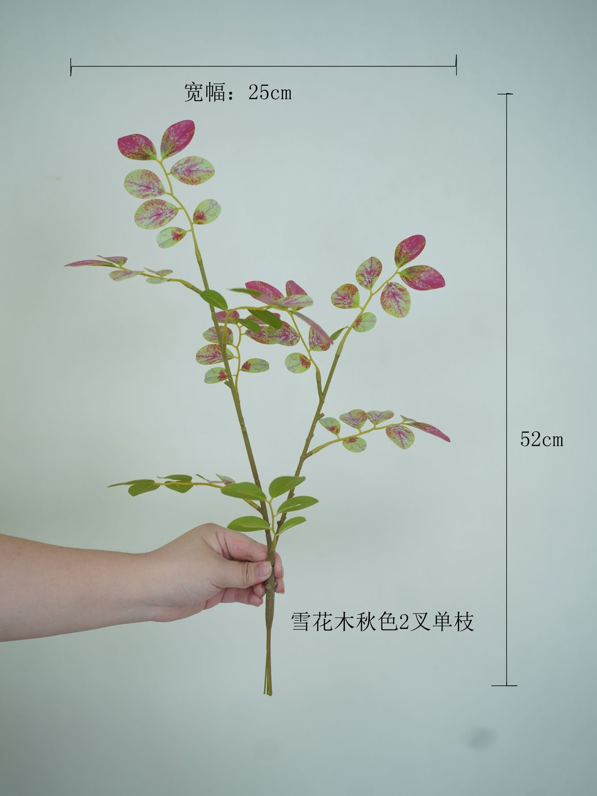
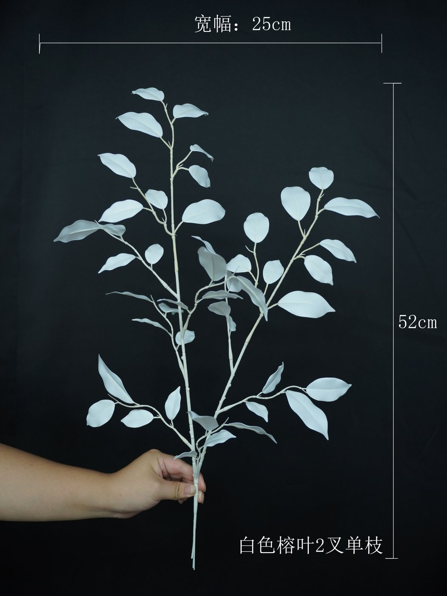
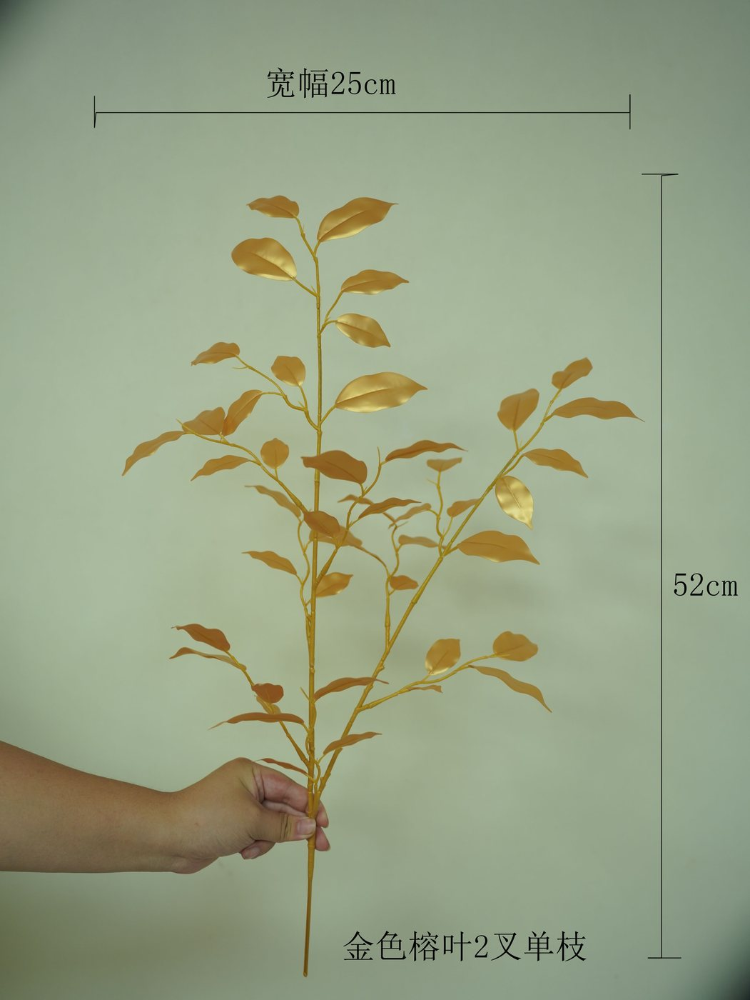

Small Plants & Sprigs
Single-Stem Sprigs
Single-Stem Sprigs — artificial plant from the factory photo collection. Request product details and a quotation.
Opens your email application; sending happens there.
Product information
Single-Stem Sprigs is part of the seller’s artificial greenery range. The photographs on this page show the actual factory product. No height reference was available for this item. Exact specifications, packing, MOQ, lead time and pricing are confirmed by the seller on inquiry.
Specifications
| Product code | LC-N029 |
|---|